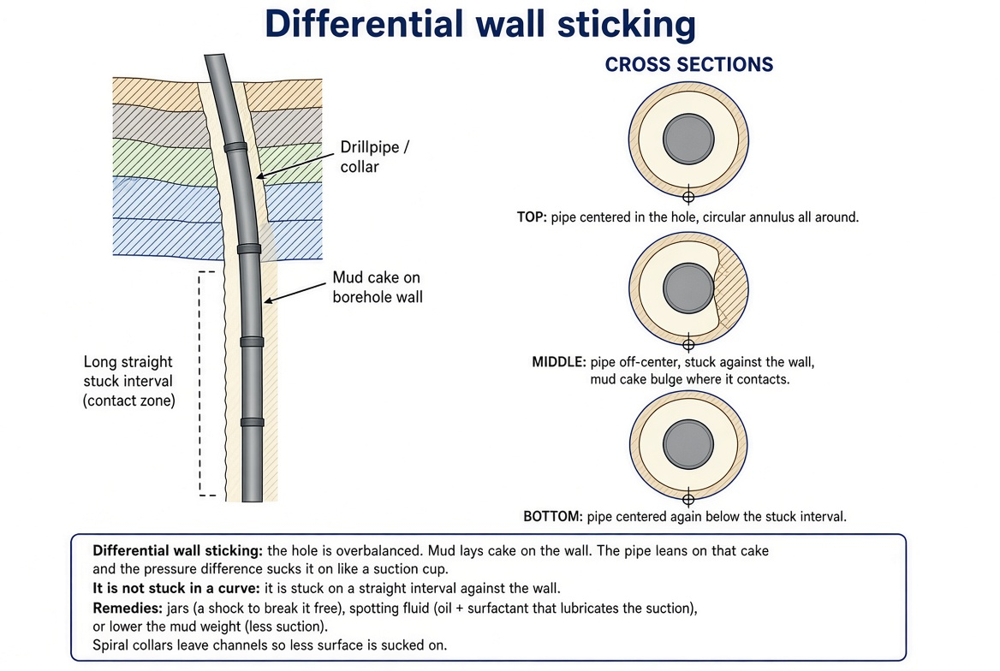
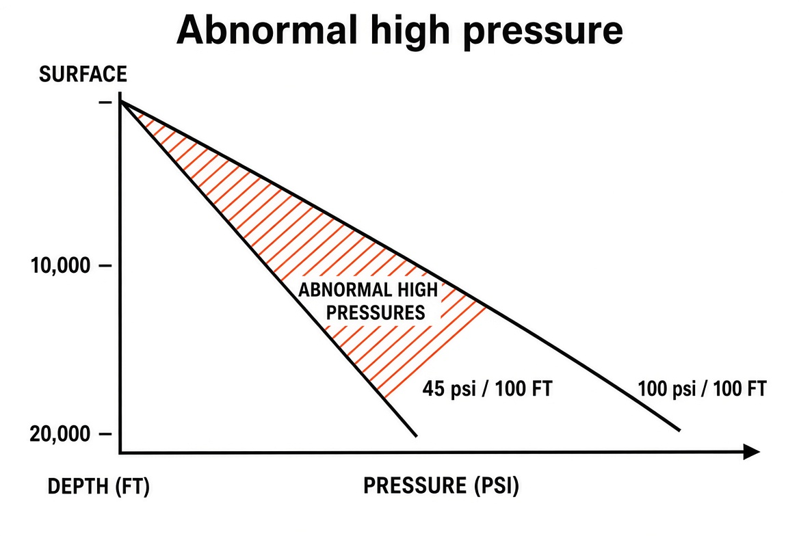

Chapter 16 — Drilling Problems
The bit does not always win. Fishing, stuck pipe, lost circulation, and kicks turn expensive rig time into NPT—and the same pit-volume and flow channels you monitor for “normal” drilling are the early-warning system. This chapter is what goes wrong and how crews respond.
Learning goals
- Separate lithostatic vs formation (pore) pressure and why mud sits between them.
- Recognize fishing tools, stuck-pipe mechanisms, and lost-circulation responses.
- Read kick signatures and outline driller’s vs wait-and-weigh kill methods.
- Explain dry holes in terms of petroleum-system failure, not just “bad luck.”
Subsurface conditions
- Geothermal gradient: rock gets hotter with depth (~2.5 °C per 100 m in a typical basin; notes also cite ~1.4 °F/100 ft). Mud and oil return hot; steel weakens; H₂S gets more aggressive. Measured with bottomhole temperature tools or temperature logs.
- Lithostatic (earth) pressure: weight of the entire rock column (~100 psi per 100 ft)—compacts reservoirs over geologic time.
- Formation / pore pressure: often approximated as a normal water gradient in the pores (~45 psi per 100 ft). At 10,000 ft expect ~4,500 psi. Mud must match or slightly exceed this.
Design mud for rock stress and you fracture the formation (losses). Design short of pore pressure and you take a kick. Working point: light overbalance—a bit over pore pressure (mud-column hydrostatic), nowhere near lithostatic.
Fishing
Something unwanted is in the hole: twisted-off string, lost tricone cone, a tool from the floor—fish / junk. A normal bit will not “eat” it cleanly. Rig keeps charging while ROP is zero—hence fishing insurance.

- Spear — expands inside the fish ID.
- Overshot — bell that grabs the OD (classic for standing pipe).
- Washover / washpipe — larger pipe clears debris around the fish and dresses the top.
- Tapered mill — opens crushed casing or odd shapes.
- Junk mill + boot basket — grind to chips; catch them.
- Wireline spear / magnet — cable or small magnetic junk.
- Impression block — lead/wax “photo” of the fish top before choosing a tool.
- Jar — impact up or down—first try before cutting anything.
Stuck pipe
- Differential wall sticking: overbalance presses pipe into mud cake like a suction cup on a straight wall—not a dogleg jam. Try jars, spotting oil/surfactant fluid, or lowering mud weight; spiral collars reduce contact area.
- Mechanical — dogleg / keyseat: hole turns >~3°/100 ft (hard dipping beds or sudden WOB changes). Slim pipe cuts a narrow groove; collars will not fit on the way out. Ream to enlarge.
- Ledges: hard/soft interbeds; soft washes out, hard rings catch tool joints.
- Stuck-point log finds the free point. Back-off cuts above the stuck point (explosive while unscrewing, or chemical cutter); recover free pipe; wash over the rest—sometimes cheaper than days of jarring.
Sloughing shale
Compacted clay. Freshwater mud lets clay absorb water, swell, and ball into the hole—plugs shakers and sticks pipe. Potassium salts or oil-based mud reduce water uptake.
Lost circulation
A thief zone (caves, open fractures, ultra-porous sand) swallows mud. Hydrostatic column drops → you can go from losses to kick if a deeper zone is live. First try a lost-circulation pill (fibers, mica, rubber, chips) to bridge fractures. Severe losses → case and cement a protection string before continuing. Data signature: pits fall, flow out < flow in, SPP may drop—the mirror of a kick.
Formation damage (skin)
The same overbalance that prevents kicks drives filtrate and fines a few inches into pay and plugs permeability next to the wellbore—skin. Far-field reservoir may be fine; near-casing will not flow. Remediate later with acid or frac; prevent with brine/synthetic mud or underbalanced drilling (rotating control head). Underbalance is not free: formation fluid can enter; before trips you must kill with heavy mud.
Corrosive gases
CO₂ and especially H₂S embrittle steel—yesterday’s torque capacity becomes today’s twist-off. Fight with specialty steel and scavenger chemicals in mud. Sour is integrity, not only price.
Abnormal high pressure and kicks
Pore pressure much higher than normal hydrostatic at that depth (sometimes ~2×). Mud designed for “normal” loses—the influx is a kick; uncontrolled to surface is a blowout.

Why: large reservoirs compact and bleed water (stay hydrostatic). Small sealed compartments cannot bleed—overburden transfers onto the fluid (“trapped” pressure).
Feedback: influx cuts mud weight (gas-cut, water-cut, oil-cut) → column lighter → more influx. Do not wait on a small kick.
Early signs (ops data): flow out > flow in; pits rise (pit-volume totalizer); sudden mud weight/temperature/resistivity change; drilling break in undercompacted shale (easy ROP = pores still overpressured). Kick rises in the annulus—hence annular and pipe rams.
Kill: shut BOPs; circulate heavier kill mud via kill line; control returns on the choke.
- Driller’s method: start circulating right away with the mud you already have—first circulation removes the influx with original weight; second brings kill-weight mud.
- Wait-and-weigh: shut in, mix kill-weight mud first; one slow circulation removes the kick and leaves kill mud. Fewer circulations, longer shut-in.
After a kick, drill the zone and set protection casing. ~Half of blowouts tie to trips: pulling pipe lowers mud level (displace volume)—use a trip tank to keep hole full; swabbing from pulling too fast can suck gas in. BOP drills exist so crews shut in from memory.
Dry holes
Drilled, logged, tested—no commercial volumes. P&A with cement. “Dry” can still mean some oil that does not pay the well. Success rates are high for development wells and much lower for new-field wildcats. Famous seismic lookalikes can still fail if seal leaked or the trap formed after migration (Ch 9 timing). Perfect WITSML does not rescue a dead petroleum system.
Key terms
- Fish / junk
- Lost metal or debris in the hole.
- Differential sticking
- Pipe sucked into mud cake by overbalance.
- Keyseat
- Narrow groove in a dogleg that traps collars.
- Thief zone
- Interval that takes mud (lost circulation).
- Skin
- Near-wellbore permeability damage.
- Kick / blowout
- Influx; uncontrolled surface flow.
- Kill mud
- Heavier mud circulated to regain overbalance.